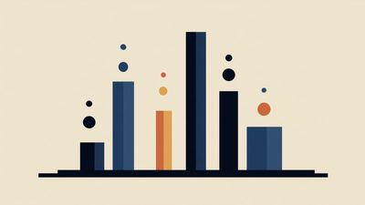
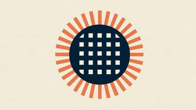
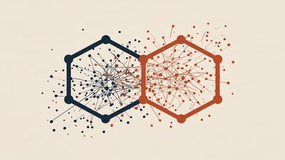
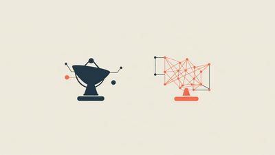
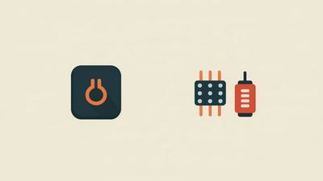
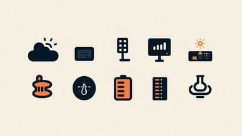
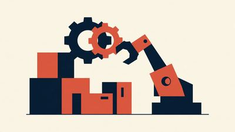

企業分析
実在の一社を例に、企業の成長段階を読むための分析視点を練習する「企業の成長段階はどう読むか」シリーズです。特定の企業への投資を推奨するものではありません。
該当する記事が見つかりませんでした。検索語を変えてお試しください。
BESI——企業の「成長段階」を読む【米国株 6/6】
米国株シリーズ6本目・最終回。BE Semiconductor Industries(BESI)を例に、「装置を作る会社」という視点から受注高の先行指標性と技術採用時期リスクを整理します。

企業の「成長段階」はどう読むか——米国株6社を並べて比較する
Ambiq Micro・MaxLinear・Astera Labs・Tower Semiconductor・Credo Technology・BE Semiconductor Industries。米国株シリーズ6本の比較を1つの表にまとめ直した早見ページです。
Credo Technology——企業の「成長段階」を読む【米国株 5/6】
米国株シリーズ5本目。Credo Technology(NASDAQ: CRDO)を例に、好決算にもかかわらず株価が急落した理由をGAAP粗利益率の低下・顧客集中の観点から整理します。

Tower Semiconductor——企業の「成長段階」を読む【米国株 4/6】
米国株シリーズ4本目。Tower Semiconductor(NASDAQ: TSEM)を例に、これまでの「設計する会社」とは逆の「作る会社(受託製造)」の視点から成長段階を整理します。

Astera Labs——企業の「成長段階」を読む【米国株 3/6】
米国株シリーズ3本目。Astera Labs(NASDAQ: ALAB)を例に、売上急拡大・黒字という「良い数字」の裏側にある、少数の大口顧客への依存度を整理します。

MaxLinear——企業の「成長段階」を読む【米国株 2/6】
米国株シリーズ2本目。MaxLinear(NASDAQ: MXL)を例に、成熟企業が既存事業からAIデータセンター向け光接続事業へ転換する途中で見えてくる数字の読み方を整理します。

Ambiq Micro——企業の「成長段階」を読む【米国株 1/6】
米国株シリーズ1本目。Ambiq Micro(NYSE: AMBQ)を例に、売上+89.7%という伸び率と、まだ営業赤字という収益基盤の距離をどう読むかを整理します。

企業の「成長段階」はどう読むか——7社を並べて比較する
ニッポン高度紙工業・グロービング・さくらインターネット・サンワテクノス・テクノフレックス・大阪有機化学工業・ウシオ電機。日本株シリーズ7本の比較を1つの表にまとめ直した早見ページです。
ウシオ電機——企業の「成長段階」を読む【日本株 7/7】
ウシオ電機(6925)を例に、「売上+27.7%・営業利益+410.5%」というV字回復の中身を、低い比較対象・M&A効果・本業改善の3つに分解して読む。シリーズ7本目・日本株編最終回です。
大阪有機化学工業——企業の「成長段階」を読む【日本株 6/7】
大阪有機化学工業(4187)を例に、「営業利益は増益、純利益は減益」という一見矛盾した予想を7つの観点で読む。シリーズ6本目です。
テクノフレックス——企業の「成長段階」を読む【日本株 5/7】
テクノフレックス(3449)を例に、「全社は増収増益」という見出しの裏にある事業別の明暗を7つの観点で読む。シリーズ5本目です。

サンワテクノス——企業の「成長段階」を読む【日本株 4/7】
サンワテクノス(8137)を例に、「商社は成長株に見えない」という先入観を7つの観点で掘り崩す。前3回との対比シリーズ4本目です。
さくらインターネット——企業の「成長段階」を読む【日本株 3/7】
さくらインターネット(3778)を例に、営業赤字を出しながら大規模先行投資を行う「投資回収前段階」の会社の成長段階を7つの観点で整理。前2回との対比シリーズ3本目です。
グロービング——企業の「成長段階」を読む【日本株 2/7】
グロービング(277A)を例に、事業モデルが変わりつつある会社の成長段階を7つの観点で整理。前回(素材メーカー)との対比シリーズ2本目です。
ニッポン高度紙工業——企業の「成長段階」を読む【日本株 1/7】
ニッポン高度紙工業(3891)を例に、成長段階を読む7つの観点を整理。個別銘柄の売買を推奨するものではなく、分析視点を学ぶケーススタディです。